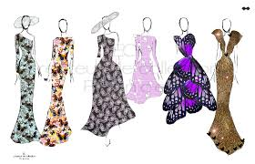

La mode
La mode est une manière de s'habiller , correspondant à une période bien définie, à un endroit particulier.
Voici pour exemple une top modèle Naomi Campbell avec une démarche très sexy. Une très belle femme,
une beauté des jamaïcaines ... bref nous ne faisons pas distraire ce n'est que le début.

Comme vous l'avez vue elle porte une robe de collection fabriquer par une industrie (commerce de l'habillement) pour un défilé de mode.
Son but est d'exposer et valoriser les produits de l'industrie de la mode. Ensuite les produits dont les collections arrivent dans les boutiques.
La création
Les stylistes et les modélistes s'occupent de la création. Ce que nous portons sur nous : vêtements, accessoires , chaussures , basket , ..etc .
Tout ceci est une création d'eux. Effectivement vous faites partie de la mode, car vous êtes les porteurs de ces produits.
Après je ne dis pas que vous êtes à la mode ! cela en dépend de vos goûts et surtout votre style...

Le styliste fait la création du dessin , il s'inspire de tout : de tableaux, de photographie, de culture, de la mode du moment. Il fait d'abord un choix
tissu. Puis il dessine ses vêtements et après plusieurs essaie, il peut terminer son dessin.

Ces dessins passe ensuite entre les mains du modélistes. Le modéliste est le créateur du prototype d'après le dessin d'un styliste.
Il réalise aussi des modèles réduits.